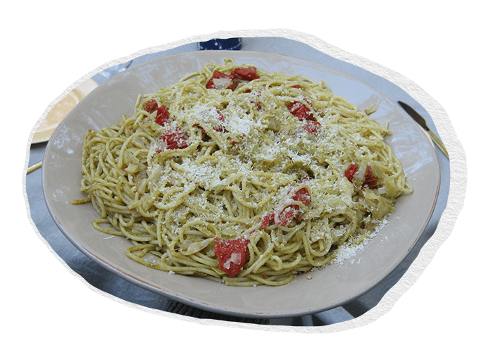
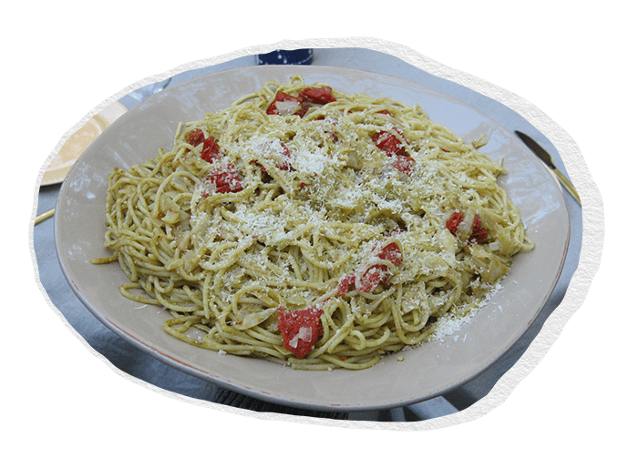
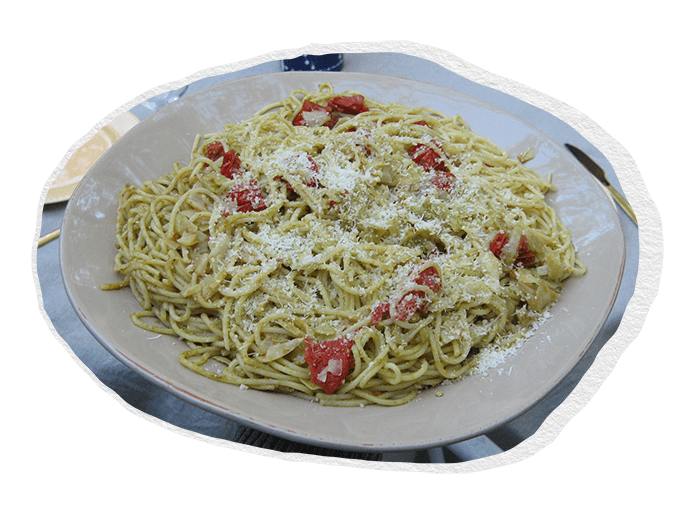
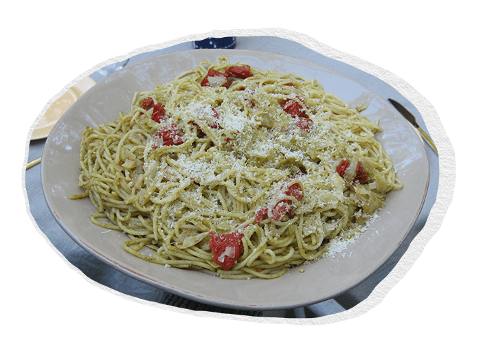

Kog pastaen
Kog pastaen efter anvisning på pakken, og gem lidt kogevand til at justere konsistensen senere.
Lav pestoen
Blend ramsløg, olie, kerner, citron og lidt salt.
Forbered grøntsagerne
Snit spidskål fint og steg den hurtigt på en pande med lidt olie, indtil den falder sammen og bliver let karamelliseret.
Skær tomaterne i halve og kom dem på panden sammen med kålene de sidste minutter af tilberedningen, så de bliver let opvarmede og bløde.
Samle retten
Vend den kogte pasta med pesto, spidskål og tomater. Tilsæt lidt af pastavandet, hvis retten virker for tør.
Server
Server med ekstra pesto og evt. revet ost eller friskhakkede urter på toppen.
Et lille tip!
Hvis du har pesto til overs, kan den opbevares i en tætsluttende beholder i fryseren og bruges til sandwich, pizza eller som dip senere